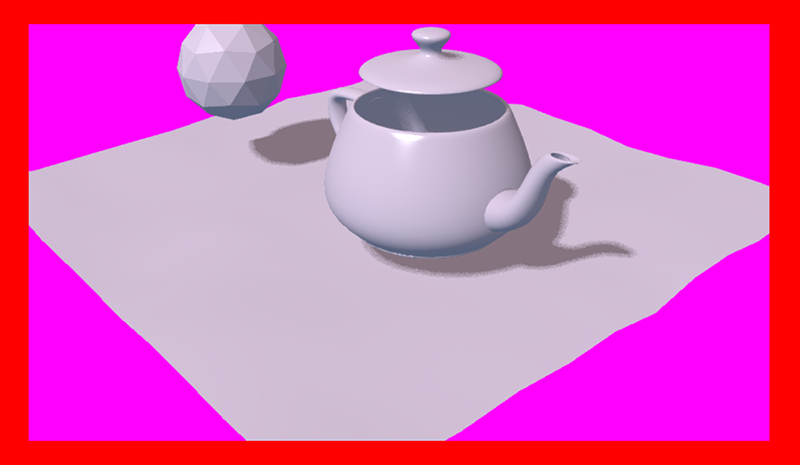

For Application Developers¶
Table of Contents
Application Development¶
To simplify development process, we recommend to use Project Manager. It can be used to quickly create a simple application with a generic code that is enough to load a simple scene and enable basic camera controls.
Application Code Structure¶
The process of initializing and loading an application is separated into several stages, which is reflected in the code of the application. If you are using Project Manager, a newly created Copy or Compile type project will include a main JS file, which will be placed in the SDK. The path to the file will look like this: ./projects/PROJECT_NAME/PROJECT_NAME.js.
This file contains generic code shaped as a module. This module can be registered using the certain structure:
b4w.register("my_module", function(exports, require) {
// module code
//...
});
So, the code of a module is contained within a function that accepts exports and require parameters.
requireis the method used for loading engine modules. The generic example mentioned above loads several modules:The most important ones of them are the
appanddatamodules. Theappmodule simplifies application initialization while thedatamodule contains API methods for loading 3D scene data.Note
To make module naming more convenient,
m_prefix is often used (m_app,m_dataetc.) to show that the variable is an engine module.exportsis an object used for gaining access to module’s functions from outside (for example, from other modules). In this case, only theinitfunction has been made external:b4w.register("my_module", function(exports, require) { ... exports.init = function() { m_app.init({ canvas_container_id: "main_canvas_container", callback: init_cb, show_fps: DEBUG, console_verbose: DEBUG, autoresize: true }); } ... });
Application initialization begins with this function, and it is called outside of the module:
b4w.register("my_module", function(exports, require) {
...
exports.init = function() {
m_app.init({
canvas_container_id: "main_canvas_container",
callback: init_cb,
show_fps: DEBUG,
console_verbose: DEBUG,
autoresize: true
});
}
...
});
// import the app module and start the app by calling the init method
b4w.require("my_module").init();
After this, the app.init method is called. It creates Canvas HTML element and performs all necessary action for initializing WebGL. This method has many different attributes, the most important ones of which are:
canvas_container_idset the id of the HTML element that acts as a container for the Canvas element. By default, an element with themain_canvas_containerID is used (this element is located in the main HTML file of the application).callbackis the function that is called after finishing initialization.
When application initialization is completed, the init_cb function set by the callback parameter is called:
function init_cb(canvas_elem, success) {
if (!success) {
console.log("b4w init failure");
return;
}
m_preloader.create_preloader();
// ignore right-click on the canvas element
canvas_elem.oncontextmenu = function(e) {
e.preventDefault();
e.stopPropagation();
return false;
};
load();
}
It has following parameters:
- canvas_elem is the created Canvas HTML element that will be used for rendering 3D content
- success it the flag that indicates the success of the initialization. The
falsevalue meant that the application is unable to work due to initialization errors (for example, WebGL is not supported by the device).
Note
The app.init methods sets initialization to the window.onload event, so the init_cb function will have access to the entire DOM tree of the HTML document.
Now we can begin loading 3D scene. This is done in the load function that is called from the init_cb:
var APP_ASSETS_PATH = m_cfg.get_assets_path("my_project");
...
function load() {
m_data.load(APP_ASSETS_PATH + "my_project.json", load_cb, preloader_cb);
}
The data.load method is used for loading. The first parameter of this method is the path to a 3D scene file. The path to a JSON file should be relative to the main HTML application file. Projects created in Project Manager have a dedicated asset folder, and you can easily obtain the path to it. This is done in the generic example code by introducing the APP_ASSETS_PATH global variable that is later used in the data.load.
The second parameter of the method is the load_cb function which is called after the 3D scene is loaded and prepared for rendering.
function load() {
m_data.load(APP_ASSETS_PATH + "my_project.json", load_cb, preloader_cb);
}
function load_cb(data_id, success) {
if (!success) {
console.log("b4w load failure");
return;
}
m_app.enable_camera_controls();
// place your code here
}
Calling this function means that the application has finished loading and now starts scene rendering. As this is the very first moment when the 3D scene data will be available, it is a suitable moment for initializing and preparing everything related to the scene, its object, animations and other things. For example, standard camera controls can be enabled here with the enable_camera_controls method.
Writing Application Logic¶
After initializing and loading 3D scene the application will proceed to work according to the logic set by the programmer such as interacting with input devices, manipulating scene objects, controlling camera behavior and so on.
By observing the application loading process, we can determine several places suitable for performing various tasks.
The app.init method used for starting the initialization accepts engine configuration parameters. So you can configure the engine right before calling this method using URL attributes as a base:
b4w.register("my_module", function(exports, require) { ... exports.init = function() { var url_params = m_app.get_url_params(); if (url_params && "show_fps" in url_params) var show_fps = true; else var show_fps = false; m_app.init({ canvas_container_id: "main_canvas_container", callback: init_cb, autoresize: true show_fps: show_fps }); } ... }); b4w.require("my_module").init();
Initialization is started by the
window.onloadaction, which means that after it is completed, the init_cb function will have access to the whole DOM tree. At this moment, you already can perform some preparations such as creating and setting up interface elements. However, the 3D scene itself is not yet loaded, and its objects are not yet available.After the 3D scene is loaded, the load_cb function is called. At this moment, all scene objects become available, thus any action that concerns them can be implemented in this function. Some examples can be found in the Code Snippets application.
Logic can be added to the application by using either browser or engine API:
- Basic keyboard/mouse/gamepad input can be implemented with standard event handlers by using the
addEventListenermethod. In more complex cases you can use the input API module. The engine also features the add_click_listener method that registers both mouse clicks and touch screen events which makes it useful for writing applications compatible with desktop and mobile devices alike. - Time-stretched events that have to be performed at every frame (procedural animation, for example) can be implemented with methods such as set_render_callback, append_loop_cb, animate and set_timeout. Standard
setTimeoutandsetIntervalmethods can also be used. - For complex logic that takes into account both user actions and the state of the 3D scene can use engine’s event-driven model that is based on sensor system.
Module System¶
Blend4Web engine is built upon modular structure: all engine API methods are separated into several modules. If necessary, a module can be plugged into the application with the require method. We recommend to structure the code of the actual application into modules as well.
- Registering Modules
A module is essentially a code block wrapped by a specific structure that is used to register it:
b4w.register("my_module1", function(exports, require) {
// module code
...
});
b4w.register("my_module2", function(exports, require) {
// module code
...
});
...
The register method is used for registering modules. You can only register custom modules if their names do not coincide with the regular API modules. If necessary, the module_check method to check if a module with a given name is present:
if (b4w.module_check("my_module"))
throw "Failed to register module: my_module";
b4w.register("my_module", function(exports, require) {
// module code
...
});
- Loading Modules
Custom modules, just like regular ones, can be plugged in with the require method:
b4w.register("my_module1", function(exports, require) {
var mod2 = require("my_module2")
...
});
- Application Initialization
Application initialization in Blend4Web is usually done with a call like this:
b4w.require("my_module").init();
Here, the my_module custom module and its init external function do, in a certain sense, act as the entry point to the application.
Note
In the global visibility scope a module can be loaded with the same require method available as a method of the global b4w object: b4w.require("MODULE_NAME").
- Using Multiple Modules
After a project is created in the Project Manager, its generic application JS-file will contain only one module. However, while developing the application, you might need to separate your code into several logic parts. In this case, you can either create several modules inside one file, or you can create several files each one of them contain one module.
If your application uses multiple modules, keep in mind that every one of them should be properly registered before initialization starts, or you will get an engine error if you try to call a module that is not yet registered. If you are using several JS files, the script that starts the initialization (contains application entry point) should the last one to be plugged into the main HTML application file.
Background Transparency¶
The background_color and alpha parameters are passed to the init method placed in the load callback function (a function that is called right after the scene is loaded), like this:
m_app.init ({
alpha: true,
background_color: [0.7, 0.7, 0.7, 1]
//this method sets the background to an opaque light gray color
});
The combination of the parameters passed to the method defines how the backgrounds of the Blend4Web application and the HTML application blend together. Available options are:
alpha= falseThe color of the background is defined by the
background_colorof the Blend4Web application, the background of the HTML application is not taken into consideration.

alpha= trueThe background of the HTML application might influence the background of the Blend4Web application based on its transparency which is defined by the fourth component of the
background_colorparameter (alpha=background_color[3], not to be confused with thealphaparameter mentioned above).- background_color[3] = 1
This produces the same result as if the alpha parameter has been turned off (
alpha= false)- background_color[3] = 0
Additive blending is used.
Picture above shows an HTML page containing a Blend4Web application with a blue [0, 0, 1] background that blends with the page’s red (
Red) color producing a violet tone.- background_color[3] > 0
Additive blending is used with the
background_colorhaving a greater influence.
This picture shows the same HTML page with the same Blend4Web app, however, the
alphavalue is set to 0.5, leading to a darker tone of the application background.
{kind=link}
The mechanisms of alpha lending are described in greater detail in the Color Management chapter.
By default, the alpha parameter is set to true and the background_color is set to transparent black [0, 0, 0, 0], which means that the application will have an HTML background with no influences from the background of the Blend4Web application.
Background transparency can also be utilized in Web Player applications by using the alpha URL attribute. To use this feature, firstly you need to enable the Background transparency (alpha) parameter in the Web Player Params group while creating the application.
If Blend4Web application uses sky rendering, the application canvas will be fully covered by objects (including sky), so the background will be fully opaque and not influenced by alpha settings.
Note
Sky rendering is enabled by default in Blend4Web scenes created in Project Manager. Don’t forget, in order to use a transparent background you will need to manually disable sky rendering.
Resource Conversion¶
Currently, browsers do not fully support all possible media formats, so in order to create cross-browser applications (and also for optimization purposes) we recommend you to use the resource converter.
To support a wider range of platforms, a Python script (scripts/converter.py) for converting the source files into other formats is included into the distribution.
There are two ways to run this script.
Firstly, you can run it automatically using the project management system. The Convert Resources button can be found in the main page of the Project Manager, in the Operations tab at the right side of the screen.

Secondly, you can run the script manually:
> cd <path_to_sdk>/scripts
> python3 converter.py [options] resize_textures | convert_dds | convert_media
For MS Windows users:
cd <path_to_sdk>\scripts
python converter.py [options] resize_textures | convert_dds | convert_media
Note
To run the scripts the Python 3.x needs to be installed in your system.
With the -d parameter you can specify the path to a directory in which converting will take place.
To exclude some directory from resource conversion, it is enough to put a file named .b4w_no_conv in it. This will not affect conversion in nested directories.
The resize_textures argument is used for decreasing texture resolution for the LOW mode.
Commands¶
Commands for conversion:
resize_texturesconverts textures to lower resolution.convert_ddsconverts textures to DDS format.convert_pvrconverts textures to PVR format.convert_mediaconverts audio and video files to alternative formats.convert_gzipgenerates GZIP-compressed versions of ”.json” and ”.bin” scene files and ”.dds” and ”.pvr” textures.
Commands for resource cleanup:
cleanup_texturesremoves low resolution textures generated by theresize_texturescommand.cleanup_ddsremoves DDS texture files generated by theconvert_ddscommand.cleanup_pvrremoves PVR texture files generated by theconvert_pvrcommand.cleanup_mediaremoves audio and video files in alternative formats that were generated by theconvert_mediacommand.cleanup_gzipremoves GZIP-compressed files generated by theconvert_gzipcommand.
Commands for image compression:
compress_pngcompresses PNG files in order to decrease their size. This option requires OptiPNG tool to be installed and set up in thePATHenvironment variable.
Other commands:
check_dependencieschecks converter dependencies
Arguments¶
-d,--dir <dir_path>enables using an alternative directory to store converted files. The <dir_path> value specifies the path to this directory.-j,--jobs <jobs>specifies the number of jobs (threads) to run simultaneously. If this parameter is set to zero or is not specified, the number will be calculated automatically based on the number of CPUs.-v,--verboseenables outputting more information about files that are being converted. For example, when converting textures into DDS format, the script will show progress percentage for every file that is being converted.
Dependencies¶
Please make sure that you have all converter dependencies installed. You can do it with the following command:
> python3 <path_to_sdk>/scripts/converter.py check_dependencies
If some program is not installed, the following message will be displayed:
Couldn’t find PROGRAM_NAME.
Linux
The list of dependencies is listed in the following table:
| Name | Ubuntu 16.04 package |
|---|---|
| ImageMagick | imagemagick |
| NVIDIA Texture Tools | libnvtt-bin |
| Libav | libav-tools |
| FFmpeg | ffmpeg |
| PVRTC | install manually |
Note
Linux users can additionally install the package qt-faststart which is used to optimize loading media files.
Windows
For MS Windows users it is not necessary to install these packages since they are already present in the SDK.
macOS
macOS users can install the brew package manager first and then install any missing packages.
Before installing packages, install the libpng and libjpeg libraries using these commands:
> brew install libpng
> brew install libjpeg
Now you can proceed with installing required dependencies:
> brew install imagemagick
> brew install --with-theora --with-libvpx --with-fdk-aac ffmpeg
In order to install NVIDIA Texture Tools, clone the repository with the following command:
> git clone https://github.com/TriumphLLC/NvidiaTextureTools.git
Now you can build and install the package:
> cd NvidiaTextureTools
> ./configure
> make
> make install
Data Formats¶
The conversion is performed as follows:
- for audio (convert_media):
- ogg (ogv, oga) -> mp4
- mp3 -> oga
- mp4 (m4v, m4a) -> oga
- webm -> m4a
We recommend to use ogg as a base format. In this case the only conversion required for cross-browser compatibility will be ogg to mp4. Example of an input file: file_name.ogg, example of an output file: file_name.altconv.mp4.
- for video (convert_media):
- ogg (ogv, oga) -> m4v / seq
- mp3 -> webm / seq
- mp4 (m4v, m4a) -> webm / seq
- webm -> m4v / seq
We recommend to use WebM as a base format. In this case the only conversion required for cross-browser compatibility will be webm to m4v (webm to seq for iPhone). Example of an input file: file_name.webm, example of an output file: file_name.altconv.m4v.
- for images (convert_dds):
- png -> dds/pvr
- jpg -> dds/pvr
- bmp -> dds/pvr
- gif -> dds
Example of an input file: file_name.jpg, example of an output file: file_name.altconv.jpg.dds.
For the purpose of optimizing application performance it’s possible to use min50 (halved) and DDS or PVRTC (compressed) textures. In order to do this, we need to pass the following parameters during initialization of the application:
exports.init = function() {
m_app.init({
// . . .
assets_dds_available: true,
assets_min50_available: true,
// . . .
});
// . . .
}
Note
If you are planning to use textures compressed into PVRTC format, then replace this line of code
assets_dds_available: true,
with the following:
assets_pvr_available: true,
This will tell the engine to load PVRTC textures, if such are present in the ./assets/ folder.
DDS Texture Compression¶
DDS textures require less memory (4 times less for RGBA data and 6 times for RGB data), but using them has following downsides:
DDStextures might not work on some devices, especially the mobile ones, as not all of them support theWEBGL_compressed_texture_s3tcextension;- as
DDSis a lossy compression format, compression artifacts might be visible, especially on normal and stencil maps; it is recommended to disable compression for such textures.
An example of the
DDScompression artifacts, particularly visible on the edges of the shadow.
During exporting the scene from Blender to the JSON format (but not the HTML format), DDS textures will be plugged in automatically, if they are present.
Textures can be converted to the DDS format using the project manger or the scripts/converter.py script described above.
PVRTC Texture Compression¶
PVRTC is another texture compression format used primarily on iOS devices. In some cases it can produce texture files up to two times smaller than same texture images would take in DDS format.
The format has two compression settings that are supported by the engine: 2-bpp (two bits per pixel) and 4-bpp (four bits per pixel).
As with DDS format, textures compressed using the PVRTC algorithm may not work on some platforms, especially mobile, because using this compression format require support for the IMG_texture_compression_pvrtc WebGL extension.
The PVRTC library and SDK are available for Windows, Linux and macOS systems alike. Installation packages can be downloaded from the Power VR Insider web page.
The Blend4Web engine uses a console PVRTC tool. To use it, you need to add the path to it to the PATH environmental variable, like the following:
export PATH = <InstallDir>\PVRTexTool\CLI\<PLATFORM>\
where <InstallDir> is the PVRTexTool installation directory and <PLATFORM> is a folder that contains the version of the tool that corresponds to your OS, for example, \Windows_x86_64\ for 64-bit Windows OS.
Note
In Windows systems, environment variables can be set in the System (in Windows 10 and 8) or Properties (in Windows 7 and Vista) dialogue window by choosing Advanced System Settings -> Environment Variables, or by using console commands:
SET PATH = <InstallDir>\PVRTexTool\CLI\<PLATFORM>\
After this, you will be able to convert the textures to the PVR format by using converter.py script with the convert_dds command.
SEQ Video Format¶
The .seq file format is used for sequential video. This is applied for IE 11 and iPhone because they are currently missing support for standard video formats for textures. Using dds format for images is more optimal compared to other formats.
The engine can use files which are manually created by a user if they have the following names: file_name.altconv.m4v, file_name.altconv.mp3 and so on. Such files should be placed in the same directory as the media files used in Blender.
You can also use the free and cross-platform application Miro Video Converter to convert media files.
GZIP Compression¶
Typical Blend4Web application can use various resource formats from standard HTML, JS, CSS, PNG or JPEG files to engine-specific JSON- and BIN-files that contain scene data. Compressed DDS/PVR image formats are also an option. Both big and small applications benefit from decreasing the size of the resources, as this also decreases the loading time.
Usually, loading time can be decreased by setting up caching on the server that contains web application. You can also enable GZIP compression for various file types.
Speaking of the specific file types, GZIP compression should be used for JSON, BIN, DDS and PVR files. JSON and BIN files, being the main scene files, can contain large amounts of data, while DDS and PVR also can be quite large (at least when compared to standard PNG and JPEG files), and there can be quite a lot of them.
But if for some reason GZIP compression cannot be set up on the server, it can be enabled in the application itself.
The engine can load compressed resources in the form of .gz files. To use this feature in a WebPlayer JSON type project, you need to pass the compressed_gzip URL parameter. If you are developing your own application, you need to pass the assets_gzip_available configuration parameter during the initialization.
var m_app = require("app"); m_app.init({ canvas_container_id: "main_canvas_container", callback: init_cb, show_fps: DEBUG, console_verbose: DEBUG, autoresize: true, assets_gzip_available: true });
Compressed .gz files should be placed alongside the original ones, for example, like this:
my_project/ assets/ my_scene.json my_scene.json.gz my_scene.bin my_scene.bin.gz
This also applies to the .dds and .pvr files and their compressed counterparts .dds.gz and .pvr.gz.
Note
If a compressed .gz is not present, engine will load the original file and output a corresponding message to the console.
GZIP compressed files can be generated with the convert resources command that can be found in the Project Manager interface. This can also be done in the console by running the ./scripts/converter.py script with the compress_gzip (for compressing resources) or the cleanup_gzip (for removing compressed files) command.
Code Examples¶
The SDK includes the Code Snippets application which demonstrates how to use the engine’s functionality.
Currently, this application contains the following examples:
- Bone API - an example of individual bones position control
- Camera Animation - procedural camera animation
- Camera Move Styles - changing control modes for the camera
- Canvas Texture - working with canvas textures
- Change Image - changing texture images on-the-fly
- Custom Anchors - creating custom annotations
- Dynamic Geometry - procedural geometry modification
- Gamepad - an example of controlling a character via gamepad
- Gyro (Mobile Only) - working with mobile devices’ gyroscopes
- Instancing - copying scene objects in runtime
- Lines - procedural lines rendering
- Material API - tweaking material properties and replacing objects’ materials
- Morphing - using shape keys
- Multitouch (Mobile Only) - using mobile devices multitouch sensor
- Pathfinding - an example of calculating paths and using navigation meshes
- Ray Test - the usage of raycasting for obstacles detection
- VR - a VR application example
- Webcam - using media stream from a web camera
The Code Snippets application is available at ./apps_dev/code_snippets/code_snippets_dev.html. It can be also run by using a link in the index.html file located in the SDK root.
Loading Application Assets¶
To simplify project maintenance and server deployment always keep your application asset files (exported scenes, textures, sounds, etc) separate from other project files (JavaScript, CSS, HTML, etc). Inside your SDK this asset directory is located at projects/my_project/assets.
To load files (e.g by using load()) from this directory use the get_assets_path() method:
m_data.load(m_config.get_assets_path("my_project") + "loaded_scene.json", load_cb);
This way you ensure that your applications will find assets independently of the current development stage (developed, built or deployed).
Event-Driven Model¶
The event-driven model provides a universal interface for describing the 3D scene’s change of state. It simplifies the processing of physics events and user actions.
Sensors¶
The basic unit of the event-driven model is a sensor. A sensor is a programming entity and can only be active (1, one) or inactive (0, zero). Some sensors may carry a payload which can be received in the manifold’s callback function with corresponding API. For example, the ray-tracing sensor (Ray Sensor) provides the relative length of the intersection ray.
Users cannot directly control sensors via the external API. Instead, all sensors must be present in one or multiple collections - so called sensor manifolds. A manifold is a logic container associated with a scene object. It generates a response to a defined set of sensor events by executing a callback function. To define the manifold it is required to have the following information (see also the API documentation for description of the controls.create_sensor_manifold function):
- An object to carry the manifold (e.g. a thrown object).
- A unique id of the manifold (e.g. “IMPACT”).
- Callback execution mode (the options are:
CT_POSITIVE- logic function positive result,CT_CONTINUOUS- every frame with a positive logic function result and once with a zero result,CT_LEVEL- any logic, function result change,CT_SHOT- one-stage logic function result change,CT_TRIGGER- logic function result switch,CT_CHANGE- any sensor value change). - An array of sensors.
- A logic function to define the combination of the sensor states for which the callback function is executed.
- A callback function.
- An optional parameter to pass into the callback function.
You can read more about engine API in the controls module documentation.
Example¶
Let’s consider the task to insonify the impact of a thrown stone. A distinctive sound should be produced for impacting different media (for example terrain and wall). There are collision meshes with physical materials in the Blender scene, material ids are “TERRAIN” and “WALL”. There is also a physical object being thrown in the scene, the object is named “Stone”.
Let’s define a collision sensor for each medium, by the type of the sound produced.
// import the modules
var m_scenes = b4w.require("scenes");
var m_controls = b4w.require("controls");
// get the object being thrown
var stone = m_scenes.get_object_by_name("Stone");
// create the sensors
var sensor_impact_terrain = m_controls.create_collision_sensor(stone, "TERRAIN");
var sensor_impact_wall = m_controls.create_collision_sensor(stone, "WALL");
Add the sensors into an array. Use the OR logic in the logic function. Place the sound processing code in the callback function. Create the sensor manifold with the “IMPACT” id and the CT_SHOT type.
// array of the sensors
var impact_sens_array = [sensor_impact_terrain, sensor_impact_wall];
// manifold logic function
var impact_sens_logic = function(s) {return (s[0] || s[1])};
// callback
var impact_cb = function(obj, manifold_id, pulse) {
// NOTE: it's possible to play both sounds simultaneously
if (m_controls.get_sensor_value(obj, manifold_id, 0) == 1) {
// ...
console.log("play the terrain impact sound");
}
if (m_controls.get_sensor_value(obj, manifold_id, 1) == 1) {
// ...
console.log("play the wall impact sound");
}
}
// create the manifold
m_controls.create_sensor_manifold(stone, "IMPACT", m_ctl.CT_SHOT,
impact_sens_array, impact_sens_logic, impact_cb);
When the “Stone” object collides with any physical material of “TERRAIN” or “WALL”, the callback function is executed. Inside this function we get the values of both sensors by their indices in the sensor array (0 - “TERRAIN”, 1 - “WALL”). The sensor value = 1 (active) means that the collision happened with the corresponding physical material. As a result the corresponding sound is produced (the code is not shown).
SDK File Structure¶
- addons
- blend4web
- Blender addon
- apps_dev
SDK apps source code
- code_snippets
source files of the Code Snippets application
- scripts
- Blend4Web API usage examples’ source files
- dairy_plant
- source files of the Dairy Plant demo (available only in SDK Pro)
- demos_animation
- project files of the basic animation demos
- demos_environment
- project files of the basic environment demos
- demos_interactivity
- project files of the basic interactivity demos
- demos_materials
- project files of the basic materials demos
- demos_media
- project files of the basic media demos
- demos_particles
- project files of the basic particles demos
- demos_physics
- project files of the basic physics demos
- demos_postprocessing
- project files of the basic postprocessing demos
- farm
- source files of the Farm demo (available only in SDK Pro)
- fashion
- source files of the Fashion Show demo (available only in SDK Pro)
- flight
- source files of the Island demo
- new_year
- source files of the New Year 2015 greeting card
- project.py
- script for application developers
- space_disaster
- source files of the Space Disaster app
- tutorials
- source files of the Blend4Web tutorials
- victory_day_2015
- source files of the V-Day 70 greeting card
- viewer
- the sources files of the Viewer application
- webplayer
- source files of the Web Player app
- website
- source files of applications from the Blend4Web official website
- blender
- source files of the Blender scenes
- csrc
- source code (in C) of the binary part of the engine exporter and of the other utilities
- deploy
the resource directory for deploying on the server (scene source files, compiled applications and documentation)
- api_doc
- API documentation for developers (built automatically, based on the engine’s source code)
- apps
3D applications intended for deploying; the directory duplicates apps_dev
- common
- Compiled engine files. Shared by all applications from SDK (hence the name).
- assets
- application assets: scenes, textures and sounds
- doc
- the current user manual in HTML format, built automatically from doc_src
- webglreport
- WebGL report application
- distfiles
- distribution builder lists
- doc_src
- source files of the current manual written in reST
- index.html and index_assets
- main SDK webpage files
- license
- files with license texts
- Makefile
- makefile for building the engine, the applications, and the documentation
- projects
- directory for user projects
- README.rst
- README file
- scripts
scripts
- check_resources.py
- script for checking of and reporting about unused resources (images and sounds referenced by the exported files)
- compile_b4w.py
- script for building engine code and applications
- converter.py
- script which halves the texture dimensions, compresses the textures into the DDS format, converts sound files into mp4 and ogg formats
- custom_json_encoder.py
- fork of the json Python module, sorts the keys in reverse order
- gen_glmatrix.sh
- script for generating the math module based on the source code of glMatrix 2
- graph.sh
- SVG generator for the current scene graph, used for debugging rendering
- make_dist.py
- distributions builder script
- memory.sh
- script for checking memory (RAM) and video memory (VRAM)
- mod_list.py
- script for generating the list of modules to use in new applications
- plot.sh
- debugging information graph builder
- process_blend.py
- script for automatic reexport of all scenes from the SDK
- remove_alpha_channel.sh
- script for removing the images’ alpha channel
- screencast.sh
- script for screen video recording
- shader_analyzer.py
- script starting the local web server which calculates complexity of the shaders
- translator.py
- script for building add-on translations
- shaders
- GLSL shaders of the engine
- src
main source code of the engine’s kernel
- addons
- source code of engine add-ons
- ext
- source code of the external declarations that form the engine’s API
- libs
- source code of the libraries
- tmp
- directory for temporary files (e.g. Fast Preview)
- tools
various tools for building the engine, apps or convert resources
- converter_utils
- binary builds of the tools for resource conversion
- closure-compiler
- Google Closure compiler, its externs and their generators
- glsl
- compiler
- compiler for the engine’s GLSL shaders
- pegjs
- grammars of the PEG.js parser generator for implementing the GLSL preprocessor, and also the script for generating the parser modules from these grammars
- yuicompressor
- utility for compressing CSS files
- uranium
- source code and building scripts of the Uranium physics engine (the fork of Bullet)
- VERSION
- contains the current version of the engine
Loading Local Resources¶
The engine’s renderer is a web application and it works when you view an HTML file in a browser. After initialization the resources (scenes, textures) are loaded. This process is subject to the same-origin policy rule. In particular this rule forbids loading from a local directory.
Since version 15.02, the Blend4Web SDK includes the development server to solve the problem of loading local resources.
Quality Profiles¶
Several quality profiles are implemented in order to support platforms with different functionality.
- low quality (
P_LOW) - a range of functions is turned off (such as shadows, dynamic reflection, postprocessing), the size of textures is halved when using a release version, anti-aliasing is disabled- high quality (
P_HIGH) - all features requested by the scene are used, the anti-aliasing method is FXAA- maximum quality (
P_ULTRA) - rendering resolution is doubled, resolution of shadow maps is increased, the anti-aliasing method is FXAA (uses higher quality settings and works slower).- custom quality (
P_CUSTOM) - any quality parameter can be set to any possible value. This option is used when you need to set certain quality parameters manually. By default, it uses the same settings asHighquality profile.

Switching the quality profiles can be performed in runtime before initialization of the WebGL context. The default profile is P_HIGH.
var m_cfg = b4w.require("config");
var m_main = b4w.require("main");
m_cfg.set("quality", m_cfg.P_LOW);
m_main.init(...);
Application developers can also set the quality parameter upon engine initialization using the app.js add-on:
var m_cfg = b4w.require("config");
var m_app = b4w.require("app");
m_app.init({
canvas_container_id: "body_id",
quality: m_cfg.P_HIGH
});
Non-Standard Canvas Position and Orientation¶
The Canvas element, to which the rendering is performed, can change its position relative to the browser window. This can occur due to some manipulations over the DOM tree, or as a result of page scrolling which is especially relevant for non-fullscreen web applications.
In most cases this will not affect the performance of the app by any means. However, some DOM events related to mouse cursor or touch position may carry incorrect information. This occurs because the coordinates obtained from the corresponding events are measured relative to the origin of the browser window, while the engine works with the coordinate space of the Canvas element itself (its origin is located in the top left corner).
- If the top left corner of the Canvas element matches the top left corner of the browser window and is fixed in its position (non-movable) then it’s sufficient to use event.clientX and event.clientY coordinates of the input events or get_coords_x() and get_coords_y() methods.
var m_mouse = require("mouse");
// . . .
var x = event.clientX;
var y = event.clientY;
// . . .
var x = m_mouse.get_coords_x(event);
var y = m_mouse.get_coords_y(event);
// . . .
- In the case of more sophisticated manipulations with the Canvas element (scrolling of the page elements, displacement from the top level corner of the browser window, changes in the DOM-tree) it’s needed to obtain properly calculated coordinates. This can be done by using the aforementioned get_coords_x() and get_coords_y() methods with a
truevalue as a third parameter:
var m_mouse = require("mouse");
// . . .
var x = m_mouse.get_coords_x(event, false, true);
var y = m_mouse.get_coords_y(event, false, true);
// . . .
Another option in this case is to use the client_to_canvas_coords() method as follows:
var m_cont = require("container");
var _vec2_tmp = new Float32Array(2);
// . . .
var coords_xy = m_cont.client_to_canvas_coords(event.clientX, event.clientY, _vec2_tmp);
// . . .
Mobile Web Apps¶
An option to scale the whole webpage and change the orientation of a mobile device should be considered when creating user interface for a web application. It is recommended to prevent scaling and keep the aspect ratio of a webpage constant to avoid possible problems. This can be achieved by adding the following meta-tag to the page header:
<meta name="viewport" content="width=device-width, initial-scale=1.0, user-scalable=no">
Sometimes you might need to lock a mobile device to a certain orientation, especially when you don’t want to make both landscape and portrait interface variants. Since the native screenlock API is experimental and isn’t widespread, this might be easier to do using CSS rules.
To keep the orientation in landscape mode only, one can set rotation for the <html> element by 90 degrees in the portrait mode:
@media (orientation : portrait) {
html {
position: absolute;
width: 100vh;
height: 100vw;
overflow: hidden;
-moz-transform: rotate(90deg);
-ms-transform: rotate(90deg);
-webkit-transform: rotate(90deg);
transform: rotate(90deg);
-moz-transform-origin: top left;
-ms-transform-origin: top left;
-webkit-transform-origin: top left;
transform-origin: top left;
left: 100%;
}
}
Similarly, the CSS rule for the portrait mode only should look like the following:
@media (orientation : landscape) {
html {
position: absolute;
width: 100vh;
height: 100vw;
overflow: hidden;
-moz-transform: rotate(-90deg);
-ms-transform: rotate(-90deg);
-webkit-transform: rotate(-90deg);
transform: rotate(-90deg);
-moz-transform-origin: top left;
-ms-transform-origin: top left;
-webkit-transform-origin: top left;
transform-origin: top left;
top: 100%;
}
}